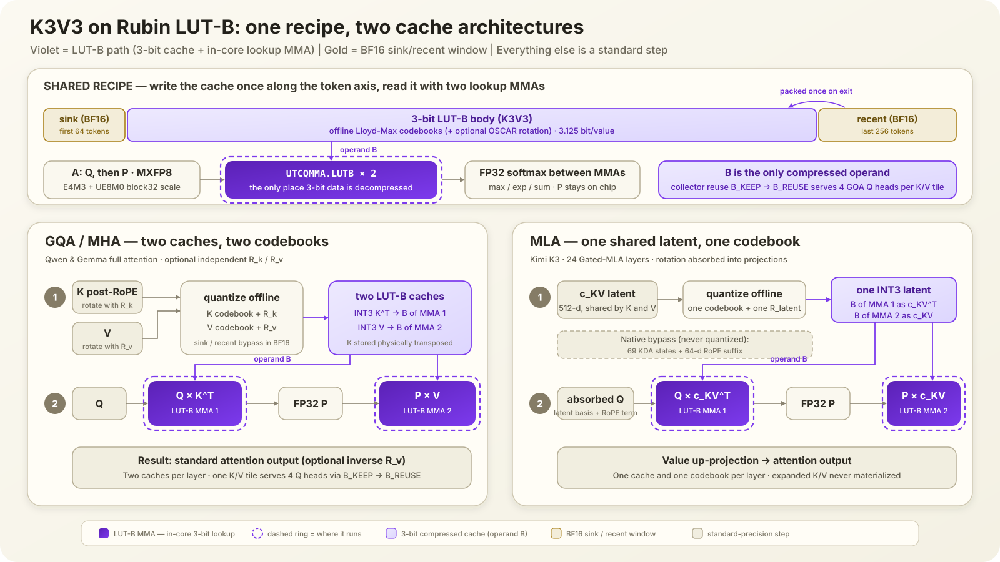

TL;DR
- Rubin 提供了什么？22 TB/s 的 HBM4，以及能在矩阵乘法内部把 3-bit index 解压成 8 个 E4M3 数值的 LUT-B Tensor Core。
- Attention 怎么用它？把
Kᵀ和V存成 3-bit LUT-B operand； Q 和 softmax 后的 P 以 MXFP8 留在 A，两次乘法都直接消费压缩 KV。 - 为什么不能直接用朴素 INT3？Outlier 会毁掉它：Qwen3-4B 的 8K PPL 从 9.468 暴涨到 1504。离线 Lloyd-Max codebook —— 加上 OSCAR rotation 和 BF16 sink/recent 窗口 —— 能拉回到约 10.4。
- 能快多少？只算 bytes 是 H100 BF16 的 29–32×，但 LUT 只支持 B，而 MXFP8 的 M tile 是 128、GQA 只有 4 行：可信的 single-token 上限约 20.4×（60–80% 执行效率下 12.3–16.4×）。30× 只是 byte-only 上界。
1Intro：Vera Rubin 最近到底变了什么？
1.1 从“faster GPU”变成 agentic inference platform
NVIDIA 对 Rubin 的官方叙事是 agentic AI：更长 context、更多 reasoning steps、更高 decode interactivity， 以及 rack-scale orchestration。单张 Rubin GPU 的公开规格包括 224 SM、896 Tensor Cores、288 GB HBM4 和 22 TB/s HBM bandwidth；Vera Rubin NVL72 则把 72 张 GPU 连接成一个 NVLink 6 scale-up domain。
| Public spec | 1× Rubin GPU | Vera Rubin NVL72 |
|---|---|---|
| GPU count | 1 | 72 |
| HBM4 capacity | 288 GB | 20.7 TB |
| HBM bandwidth | 22 TB/s | 1,580 TB/s |
| NVFP4 inference | 50 PFLOP/s | 3,600 PFLOP/s |
| FP8/FP6 published peak | 17.5 PFLOP/s | 1,260 PFLOP/s |
| NVLink bandwidth | 3.6 TB/s | 260 TB/s switch bandwidth |
这些数字来自 NVIDIA Rubin GPU architecture 和 Vera Rubin NVL72 specs。 它们是 peak specs，不等于应用可达到的 sustained performance。
1.2 为什么我们特别关心 KV cache？
Community 常用一句话概括 inference：prefill is compute-bound, decode is bandwidth-bound。 Medium 的 disaggregated inference 文章用这个框架解释了为什么 HBM、KV movement 和 prefill/decode separation 会变得越来越重要。
对长 context decode，每生成一个 token，都需要重新读取历史 K/V。模型越小、context 越长、batch 越高， KV traffic 越可能从配角变成主要瓶颈。因此 Rubin 的 22 TB/s HBM4 很重要；但更有意思的是，它还带来了 减少 bytes/value 的新 ISA。
1.3 CUDA 13.4 让 Rubin 从 slideware 变成可检查的软件目标
SemiAnalysis / InferenceX 报道了第一版公开 SM107 software stack：CUDA 13.4、PyTorch、vLLM 和 OpenAI Triton 开始加入 Rubin 支持， 同时披露了 3-bit programmable LUT Tensor Core。
我们实际安装了 CUDA 13.4.46 Developer Preview，并使用：
- PTX ISA 9.4
sm_107aptxascuobjdumpnvdisasm
这让我们至少可以做 compile-time legality check。需要注意，vLLM 的 SM107 tracking issue 仍然是 open，Triton 也只是 initial Rubin support； software bring-up 还没有结束。
2最相关的新特性：3-bit programmable LUT-B
2.1 LUT-B 在做什么？
普通 FP8 B matrix 每个值需要 8 bit。Rubin LUT-B 改为：
- 每个位置只存一个 3-bit index；
- index 从 8-entry E4M3 LUT 中选择 reconstruction value；
- Tensor Core 在
tcgen05.mma内部完成 lookup； - kernel 不需要先 materialize 一个 decompressed B matrix。
SemiAnalysis 描述的 granule 是 K=64 × N=8 = 512 values：
512 × 3-bit index = 192 bytes
8 × E4M3 LUT = 8 bytes
--------------------------------
total = 200 bytes
effective = 3.125 bit/valueLUT 不要求 uniform spacing，因此可以放 Lloyd-Max 这种 non-uniform centroids。这也是 3-bit 仍可能保住 质量的关键。这些 granule 在 attention dataflow 中的位置见图 2。
2.2 CUDA 13.4 compile test 告诉了我们什么？
我们在 clean K8s container 中 compile PTX，并检查生成的 SASS：
| Probe | Compatibility | Compiler / SASS evidence | 含义 |
|---|---|---|---|
sm_107a target | SUPPORTED | ptxas PASS | Rubin compile CI 可建立 |
| UE5M3 conversion | SUPPORTED | F2FP.SATFINITE.UE5M3 | UE5M3 datatype 本身存在 |
| Dense E4M3 A × LUT-B E4M3 B | SUPPORTED | UTCQMMA.LUTB | 基础 QK/PV 映射合法 |
| MXFP8 block32 A × LUT-B B | SUPPORTED | UTCQMMA.LUTB + scale TMEM | scaled Q/P 可融合 |
| LUT-B collector B reuse | SUPPORTED | B_KEEP → B_REUSE | 一个 K/V tile 可跨 GQA heads 复用 |
| Sparse A × ordinary B | SUPPORTED | UTCQMMA control | Sparse-A MMA 本身存在 |
| Sparse A × LUT-B B | UNSUPPORTED | ptxas rejects mma.sp...lut::b | sparse P 不能和 LUT-B V 同时用 |
| MXFP8 + UE5M3 scale + LUT-B | UNSUPPORTED | PTX 9.4 Table 69 | FP8 scale 必须改用 UE8M0 |
| Transposed LUT-B B | UNSUPPORTED | PTX 9.4 restriction | K 必须物理存为 Kᵀ |
PTX 9.4 规定 mxf8f6f4 的 block scale 为 UE8M0，而 UE5M3 scale 属于 mxf4nvf4。
因此 K3V3 attention 的 hardware-valid Q/P contract 是 E4M3 + UE8M0 block32。
3我们做了什么：把 LUT-B 映射到 attention
Rubin LUT-B 有一条最重要的规则：它只在 MMA 内解压 matrix B。因此我们不把整个 attention 都压成 3-bit，而是压缩每个 decode step 都会反复读取的 cache；Q 和 P 仍作为 MXFP8 matrix A。
3.1 一张图看懂：GQA KV 与 MLA latent

UTCQMMA.LUTB，
MXFP8 Q/P 位于 A，中间保持 FP32 softmax。下：两种架构唯一的差别是哪份 cache 成为 operand B ——
GQA/MHA 压缩独立的 Kᵀ 和 V（每层两套 codebook），MLA 压缩一份共享的 512-d latent
（一套 codebook 喂两次 MMA）。紫色即 LUT-B 路径，虚线圈标出 lookup MMA 运行的位置。两种架构走的是同一条四步路径：
- Cache 只写一次。离线准备 codebook；token 进入低精度区域时，只保存 3-bit index 和 8 个 E4M3 lookup values。
- 第一次 LUT-B MMA。MXFP8 Q 作为 A，压缩 cache 作为 B，计算 attention scores。
- Softmax 保持 FP32。max、exp、sum 和 normalization 不降到 INT3；得到的 P 留在片上， 再转成 MXFP8。
- 第二次 LUT-B MMA。MXFP8 P 作为 A，同一类压缩 cache 作为 B，得到 attention output。
差别只在“压缩哪一份 cache”：
- GQA / MHA（Qwen、Gemma）缓存独立的
Kᵀ和V，所以每层有 K/V 两套 codebook，也可以有独立的R_k/R_v。sink 64、recent 256 和未满 block 保持 BF16。 - MLA（Kimi K3）不展开 K/V，只缓存一份共享的 512-d latent
c_KV，所以每层 只需一套 codebook 和一个 latent rotation。Kimi 的 69 个 KDA states 与 64-d RoPE suffix 保持原生精度； 只有 24 个 Gated-MLA layers 的 latent 进入 K3V3。
3.2 Attention 里具体怎么算？
| 架构 | 第一次乘法：算 scores | 中间 | 第二次乘法：算 output |
|---|---|---|---|
| GQA / MHA | MXFP8 Q × LUT-B Kᵀ | FP32 softmax 得到 P | MXFP8 P × LUT-B V |
| MLA | MXFP8 absorbed Q × LUT-B c_KVᵀ，再加原生 RoPE 部分 | FP32 softmax 得到 P | MXFP8 P × LUT-B c_KV，再做 value up-projection |
这里最重要的是：INT3 cache 不需要先解压回 HBM。Tensor Core 在 UTCQMMA.LUTB 内一边 lookup、
一边做乘法。Q/P 使用 E4M3 element + UE8M0 block32 scale；Qwen3-4B 的 GQA 还可以通过
B_KEEP → B_REUSE，让一个 K/V tile 服务 4 个 Q heads。
3.3 Lloyd-Max：把 8 个刻度放到真正需要的位置
3-bit 只能表示 8 个值。最简单的 uniform quantization 会把 8 个刻度等距排开；如果大多数值挤在 0 附近、 只有少量 outlier 很大，很多刻度会浪费在几乎没有数据的区域，0 附近反而分得太粗。
Lloyd-Max 的做法很直接：
- 在 calibration data 上先放 8 个初始中心。
- 每个数分给离它最近的中心。
- 把每组中心移动到这一组数据的平均值。
- 重复第 2、3 步直到基本不再变化，最后只做一次 E4M3 rounding。
这个过程完全离线进行。Serving 时不再迭代，只需找到最近的一个中心并保存其 3-bit index。GQA 每层分别拟合 K/V 两套 8-value codebook；MLA 每层只拟合 latent 的一套 codebook。
3.4 OSCAR：先把尖峰摊平，再交给 3-bit
Lloyd-Max 解决的是“8 个刻度放在哪里”，但如果少数维度特别大，3-bit 仍然很难表示。OSCAR 可以理解为： 先旋转坐标系，把集中在少数维度的尖峰摊到更多维度，再量化。
具体只有三步：
- 在 calibration data 上为每层学习一个 orthogonal rotation。
- 写 cache 前先 rotation，并裁掉极少数最极端的 outliers，然后用 Lloyd-Max K3V3。
- 在 QK/PV 的另一侧做对应变换或 inverse rotation，让原来的 attention 数学关系保持不变。
GQA 可以分别使用 R_k 和 R_v；MLA 因为 K/V 共享同一个 c_KV，只能使用
一个 latent rotation，并把对应变换吸收到 absorbed-query 和 value projection。最简单的记法是：
Lloyd-Max 调整尺子的 8 个刻度，OSCAR 先把要量的东西铺平。
4我们 measure 了什么？
4.1 Accuracy setup
| Item | Setting |
|---|---|
| Primary ablation model | Qwen3-4B-Thinking-2507 |
| PPL | WikiText-2 test，16 × 8192-token blocks |
| KL | BF16→quantized top-50 bucketed forward KL |
| Cross-model accuracy | GPQA Diamond full set，3 seeds |
| High-precision window | sink 64 + recent 256 |
| K/V | offline per-layer Lloyd-Max E4M3 LUT |
| Q/P | E4M3 element + UE8M0 block32 scale |
KL₅₀ 在 16 个 WikiText blocks 各取 16 个固定位置，共 256 samples。BF16 top-50 token 各自成桶，
其余 vocabulary 合并成 tail bucket；因此它是 full-vocabulary KL 的 data-processing lower bound，
单位 nats/token。
4.2 Accuracy analysis
本节只比较 PPL 和 KL₅₀。PPL 衡量 sequence likelihood，KL₅₀ 则直接衡量 quantized logits 相对 BF16 teacher 的分布偏移。主要方案可以在图 1 中并排比较；下方表格覆盖所有测量配置。
4.2.1 Sink/recent ablation
固定 Qwen3-4B-Thinking-2507，并保持 Q/P 为 BF16，只改变高精度窗口。A 组使用 OSCAR + offline LM K3V3；
B 组使用 ordinary uniform K3V3，不使用 OSCAR 或 Lloyd-Max。每组都扫描 64/256、
0/256、64/0、0/0，并使用相同的 8K WikiText-2 blocks。
| BF16 Sink | BF16 Recent | PPL ↓ | KL₅₀ ↓ |
|---|---|---|---|
| 64 | 256 | 10.453 | 0.09482 |
| 0 | 256 | 15.019 | 0.36044 |
| 64 | 0 | 10.659 | 0.14341 |
| 0 | 0 | 16.260 | 0.44066 |
| BF16 Sink | BF16 Recent | PPL ↓ | KL₅₀ ↓ |
|---|---|---|---|
| 64 | 256 | 1504.444 | 5.14717 |
| 0 | 256 | 1875.596 | 5.40732 |
| 64 | 0 | 1890.707 | 5.42792 |
| 0 | 0 | 2489.291 | 5.59230 |
OSCAR + offline LM 下，保留 sink 64、去掉 recent 的影响相对有限；去掉 sink 则 PPL/KL 明显恶化。 ordinary uniform K3V3 在四种窗口下都已经崩溃，说明 window 无法补偿缺少 rotation 和 non-uniform codebook 的量化误差。
4.2.2 Overall measurement
| Method | BF16 Sink | BF16 Recent | PPL ↓ | KL₅₀ ↓ |
|---|---|---|---|---|
| BF16 | all | all | 9.468 | 0.0000 |
| OSCAR INT2、无 LM | 64 | 256 | 9.893 | 0.10791 |
| Offline LM K3V3、无 OSCAR | 64 | 256 | 10.406 | 0.09618 |
| Offline LM K3V3、无 OSCAR + FP8/UE8M0 Q/P | 64 | 256 | 10.434 | 0.10447 |
| OSCAR + offline LM K3V3 + FP8/UE8M0 P only | 64 | 256 | 10.446 | 0.09609 |
| OSCAR + offline LM K3V3 | 64 | 256 | 10.453 | 0.09482 |
| OSCAR + offline LM K3V3 + FP8/UE8M0 Q/P | 64 | 256 | 10.465 | 0.10090 |
| OSCAR + offline LM K3V3 + FP8/UE8M0 Q only | 64 | 256 | 10.466 | 0.09935 |
| Ordinary uniform K3V3 | 64 | 256 | 1504.444 | 5.14717 |
8K 下，no-OSCAR offline LM 的 PPL 最低（10.406），而 OSCAR + offline LM 的 KL₅₀ 最低（0.09482）； 两者分别优化不同目标。加入 Q/P QDQ 会小幅增加 PPL 与 KL。OSCAR INT2 的 PPL 更低，但 KL₅₀ 高于两种 未加 Q/P 的 K3V3。
4.2.3 Cross-model measurement
PPL/KL 使用 8K protocol；accuracy 使用 GPQA Diamond 三种子。Qwen3.5 是 hybrid Gated DeltaNet 模型， 因此 K3V3 只覆盖 10 个 full-attention layers；Gemma4 的 40 个 sliding-attention layers 使用 256-d head， 8 个 full-attention layers 使用 512-d head，两种 geometry 分别拟合 rotation 和 per-layer codebook。 Gemma4 的 PPL/KL 使用 base checkpoint，GPQA 使用 instruction-tuned checkpoint。Kimi K3 只量化 24 个 Gated-MLA layers 的 512-d latent，69 个 KDA states 与 64-d RoPE suffix 保持原生精度；其 native mode 只作为 KL₅₀ teacher。Kimi PPL 沿用 native Kimi protocol：每个 8192-token block 只计最后 2048 个 token 的 NLL，context 仍为完整 8K；不同模型的绝对 PPL 不应横向比较。
| Model | Method | PPL ↓ | KL₅₀ ↓ | GPQA ↑ |
|---|---|---|---|---|
| Qwen3.5-35B-A3B | OSCAR + offline LM K3V3 + FP8/UE8M0 Q/P | 6.127 | 0.02295 | 82.49% |
| Qwen3.5-35B-A3B | Offline LM K3V3 + FP8/UE8M0 Q/P（无 OSCAR） | 6.109 | 0.02870 | 82.83% |
| Gemma4-12B | OSCAR + offline LM K3V3 + FP8/UE8M0 Q/P | 6.120 | 0.04806 | 62.29% |
| Gemma4-12B | Offline LM K3V3 + FP8/UE8M0 Q/P（无 OSCAR） | 6.388 | 0.07572 | 62.29% |
| Kimi K3 | OSCAR + offline LM K3V3 + FP8/UE8M0 Q/P | 1.564 | 0.00679 | — |
| Kimi K3 | Offline LM K3V3 + FP8/UE8M0 Q/P（无 OSCAR） | 1.601 | 0.00800 | — |
Kimi K3 的公开 checkpoint 是 2.8T-parameter、1.56 TB MXFP4 model。两行结果都基于 MLA latent K3V3， 不把 512-d latent 展开成标准 K/V 后再量化；native checkpoint 仅提供 KL teacher distribution， 不作为第三条结果。Latent OSCAR 把 PPL 从 1.601 降到 1.564（约 2.3%），并把 KL₅₀ 从 0.00800 降到 0.00679（约 15.2%）；GPQA 三种子仍需完成后再填。
4.3 Throughput：Rubin 上理论能到哪里？
先看单 GPU hardware。H100 和 B200 可以作为 bandwidth baseline，但它们没有 SM107 的
decompress::lut::b；只有 Rubin 能原生执行本文的 K3V3 LUT-B path。
图 1 的速度面板对应本节推导的主要上限。
| GPU | Memory | Capacity | HBM bandwidth | Dense FP8 ceiling | Native LUT-B |
|---|---|---|---|---|---|
| H100 SXM | HBM3 | 80 GB | 3.35 TB/s | 1.979 PFLOP/s | No |
| B200 SXM | HBM3e | 180 GB | up to 8 TB/s | 4.5 PFLOP/s | No |
| Rubin | HBM4 | 288 GB | 22 TB/s | 8.75 PFLOP/s assumption | Yes |
H100 数据来自 NVIDIA H100 specs；B200 使用 NVIDIA HGX component specs 的 180 GB / up to 8 TB/s，以及公开 4.5 PFLOP/s dense FP8；Rubin 的 8.75 PFLOP/s 是将 17.5 PFLOP/s published sparse peak 折半后的 modeling assumption。这个 peak 只有在 MMA tile 被填满时才成立； single-token decode 不能直接把它当成 compute ceiling。
Qwen3-4B-Thinking-2507 有 36 layers、32 Q heads、8 KV heads、head dim 128。每个 decode token 的
attention logical FLOPs 为 4 × Q_heads × head_dim × context × layers。
4.3.1 如果三张卡都读取 BF16 KV
BF16 KV 下 arithmetic intensity 只有 4 FLOP/B，因此三张卡都明显 HBM-bound。
| GPU | 8K BF16 roofline | 8K attention-only tok/s | 32K BF16 roofline | 32K attention-only tok/s |
|---|---|---|---|---|
| H100 SXM | 13.4 TFLOP/s | 2.77K | 13.4 TFLOP/s | 0.69K |
| B200 SXM | 32.0 TFLOP/s | 6.62K | 32.0 TFLOP/s | 1.66K |
| Rubin | 88.0 TFLOP/s | 18.21K | 88.0 TFLOP/s | 4.55K |
这里 TFLOP/s 随 context 不变，是因为 BF16 arithmetic intensity 固定；token/s 会随 context 变长而下降。
4.3.2 如果只按 K3V3 compressed bytes 计算
K3V3 加上 BF16 sink/recent 后，8K 的 effective storage 是 3.628 bit/value，32K 是 3.251 bit/value； 对应 arithmetic intensity 为 17.64 / 19.69 FLOP/B。
| GPU | 8K compressed-byte roofline | 8K tok/s | 32K compressed-byte roofline | 32K tok/s | 能否原生执行 |
|---|---|---|---|---|---|
| H100 SXM | 59.1 TFLOP/s | 12.23K | 66.0 TFLOP/s | 3.41K | No：需要 software unpack |
| B200 SXM | 141.1 TFLOP/s | 29.21K | 157.5 TFLOP/s | 8.15K | No：没有 LUT-B |
| Rubin | 388.1 TFLOP/s | 80.32K | 433.1 TFLOP/s | 22.41K | Yes：UTCQMMA.LUTB |
H100/B200 两行只是“如果 HBM 只搬这些 compressed bytes”的 normalization ceiling，不是可执行的 native K3V3 performance。它们必须先用 software unpack/dequantize，实际会增加 instructions、temporary traffic 和 latency。Rubin 的区别是 lookup 发生在 Tensor Core MMA 内。
4.3.3 LUT 只能放 B：对 single-token decode 的影响
这里需要加入一个此前 byte roofline 漏掉的限制。把 decode 写成 K × Qᵀ /
Vᵀ × Pᵀ 时，长 KV 位于 A 的 M 方向，短 Q/P 位于 B 的 N 方向；对非常 skinny 的 GEMV，
这个方向更容易填满不对称的 MMA tile。但是 LUT 解压只支持 B，所以 compressed KV 必须使用
Q × Kᵀ / P × V 的方向。
这并不意味着现有 attention kernels 都把 KV 放 A。 FlashInfer 的 Tensor Core path 明确把 Q fragment 传给 MMA A、K fragment 传给 B；PV 同样把 P/score fragment 放 A、V 放 B。 FlashAttention-3 也使用这组角色，并通过 GQA packing、split-KV 和 V 的 in-kernel transpose 缓解 decode 问题。因此真正的限制不是“角色与所有现有 kernel 相反”，而是 single-token 时 A 的 M tile 塞不满。
PTX 的 kind::mxf8f6f4 shape 是 M=128、N 从 8 起。Qwen3-4B 的
GQA ratio 是 4，所以一个共享 K/V tile 最多把 4 个 Q heads 打包成 4 行：
| 方向 | 有效 tile occupancy | Tile-adjusted compute cap | 8K roofline | 32K roofline |
|---|---|---|---|---|
| 只按 compressed bytes，不看 shape | — | 8.75 PFLOP/s | 388.1 TFLOP/s | 433.1 TFLOP/s |
| LUT-B：Q/P 在 A，KV 在 B | M：4 / 128 = 3.125% | 273.4 TFLOP/s | 273.4 TFLOP/s | 273.4 TFLOP/s |
| 假想 compressed-A：KV 在 A，Q/P 在 B | N：4 / 8 = 50% | 4.375 PFLOP/s | 388.1 TFLOP/s | 433.1 TFLOP/s |
为了检查“交换 operand 本身是否更快”，我们还在 B300 上用 padded dense-E4M3 GEMM 测了相同 logical work。
Q/P-as-A 与 KV-as-A 的 median latency 分别为：QK 8K 39.97 / 40.42 µs、PV 8K
43.71 / 46.70 µs、QK 32K 52.42 / 53.41 µs、PV 32K 57.95 / 57.18 µs。
差异在约 7% 以内，而且三个 case 反而是 Q/P-as-A 更快。因此不能因为 operand 名字就直接施加巨大 penalty；
上表的差距来自 MXFP8 固定 M=128 时的 logical tile utilization。B300 测试使用 dense E4M3、
不是 Rubin LUT-B，作用是校准方向性假设，不能替代 Rubin measurement。
所以对 Qwen GQA4 single-token decode，B-only constraint 把 byte-only ceiling 再除以约
1.42× @ 8K / 1.58× @ 32K。MHA/GQA ratio 1 受影响更大；GQA ratio 8、同一 KV 上的
multi-token decode，或者 speculative decode T≥2 则能填入更多 A rows，可能重新回到
bandwidth-bound。
另一个可测试的折中是 dense E4M3 A：kind::f8f6f4 支持 M=64，Qwen GQA4 的
tile-adjusted cap 会升到约 546.9 TFLOP/s，足以覆盖当前 HBM roofline；代价是失去原生 UE8M0 block32
scaling，需要软件缩放并重新做 accuracy validation。本文目前的质量数字对应 MXFP8/UE8M0，因此不能直接
认领这个更高 ceiling。如果 SM107 最终存在尚未公开的 LUT-B small-M special path，这个 cap 会改变；
当前 public PTX 与 compile probes 不能假设它存在。
4.3.4 Operand-corrected practical range
| Context | Effective KV bits/value | Byte-only HBM roofline | B-only tile-corrected ceiling | Expected @ 60–80% | Corrected tok/s | vs Rubin BF16 |
|---|---|---|---|---|---|---|
| 8K | 3.628 | 388.1 TFLOP/s | 273.4 TFLOP/s | 164.1–218.8 TFLOP/s | 56.59K | 3.11× |
| 32K | 3.251 | 433.1 TFLOP/s | 273.4 TFLOP/s | 164.1–218.8 TFLOP/s | 14.15K | 3.11× |
加入 operand shape 后，single-token attention-only ceiling 相对 H100 BF16 约为 20.4×， 相对 B200 BF16 约为 8.5×；若再按 tile-corrected ceiling 的 60–80% 估计，则分别约为 12.3–16.4× 和 5.1–6.8×。标题中的 30× 只在 byte-only roofline、 或能用 GQA/multi-token/small-M path 重新填满 Tensor Core 时成立。
5这个故事目前说明了什么？
- Dense KV-on-LUT-B 没有 legality blocker，但有 decode-shape blocker。PTX 不要求 B
必须是 static weight；
Kᵀ和V可以成为动态 compressed B，但 B-only + MXFP8 M=128 会限制 single-token tile occupancy。 - Compile proof 不等于 kernel done。我们生成了
UTCQMMA.LUTBSASS， 但还没有 production PagedAttention implementation。 - Precision contract 必须由 ISA 决定。对 LUT-B 的 MXFP8 A operand，hardware contract 是 E4M3 + UE8M0 block32。
- Offline LM 是更真实的 serving recipe。它移除了 runtime centroid fitting， 只保留 index assignment。
- Performance 不只看 bytes。Packed layout、HBM efficiency 和 collector reuse 仍然重要， 但 GQA packing、multi-token decode 与 small-M path 决定 Tensor Core 能否吃到这些 bandwidth 收益。
Reproducibility
- Offline codebooks：
/shared/oscar-int3-rubin-simulate/codebooks/qwen3-4b-thinking-2507/offline-wikitext-v2/ - PPL / KL：
/shared/oscar-int3-rubin-simulate/offline-v2/ - CUDA 13.4 compile artifacts：
/shared/oscar-int3-rubin-simulate/analysis/rubin-isa-cuda13.4-clean/ - Roofline calculator：
rotation/rubin_k3v3_roofline.py --compare-hardware - Compile probes：
rotation/rubin_compile_probes/run_compile_probes.py
References
- NVIDIA: Inside NVIDIA Rubin GPU Architecture
- NVIDIA: Inside the Vera Rubin Platform
- NVIDIA: Vera Rubin NVL72 specs
- NVIDIA: H100 product specifications
- NVIDIA: HGX H100/B200/B300 components
- SemiAnalysis / InferenceX: Vera Rubin NVL72 vs GB200 NVL72
- Medium: Prefill is Compute, Decode is Bandwidth
- CUDA 13.4 Developer Preview release notes
- PTX ISA 9.4
- FlashAttention-3
- FlashInfer Tensor Core attention source
- OpenAI Triton initial SM107 support
- vLLM SM107 tracking issue